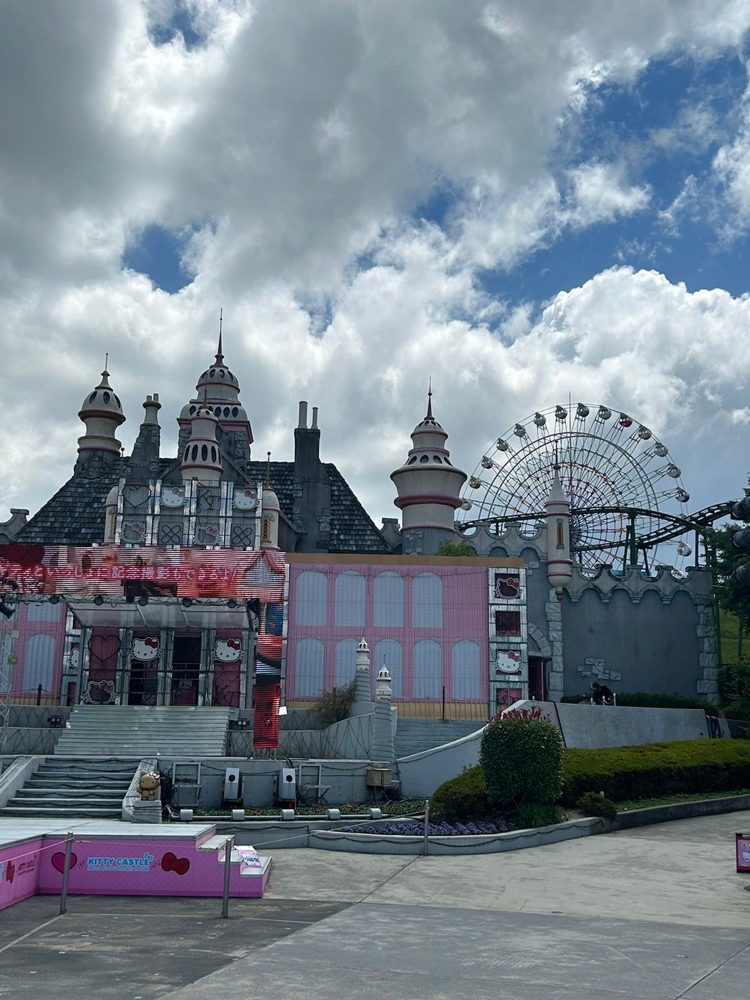
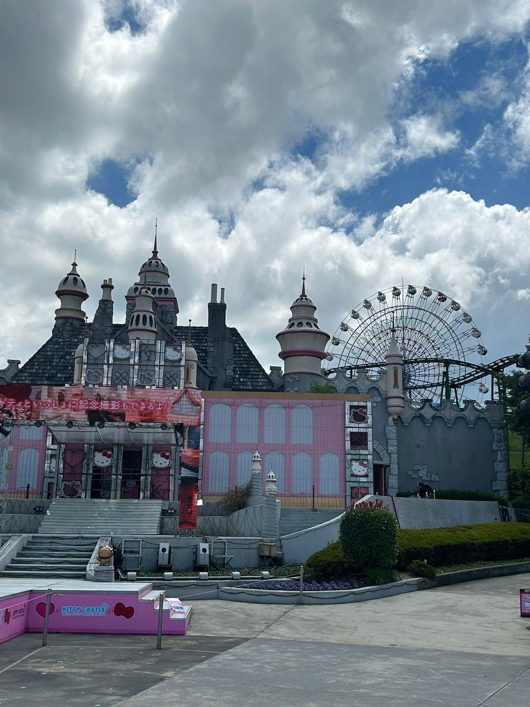

History and Background
Harmony Land opened in 1991 in Hiji, Oita Prefecture. It is a Sanrio theme park dedicated to characters like Hello Kitty. Developed by Sanrio, known for its kawaii (cute) culture, the park features various rides, shows, and parades, offering a family-friendly atmosphere. As one of Japan's two major Sanrio parks, it attracts fans from around the world, promoting friendship and happiness through its enchanting attractions.
Why we should go there
Visiting Harmony Land offers a magical experience for Sanrio fans and families alike. This charming theme park brings Hello Kitty and friends to life with whimsical attractions, interactive shows, and vibrant parades. It provides beautiful views of Kyushu's countryside. Harmony Land has different events throughout the year, making every visit unique and exciting. There are shops and restaurants with exclusive items and meals themed around the characters.Easily accessible and culturally rich, Harmony Land is a delightful destination that immerses visitors in the enchanting world of Sanrio. It is a delightful place that creates happy memories for all visitors.

 
